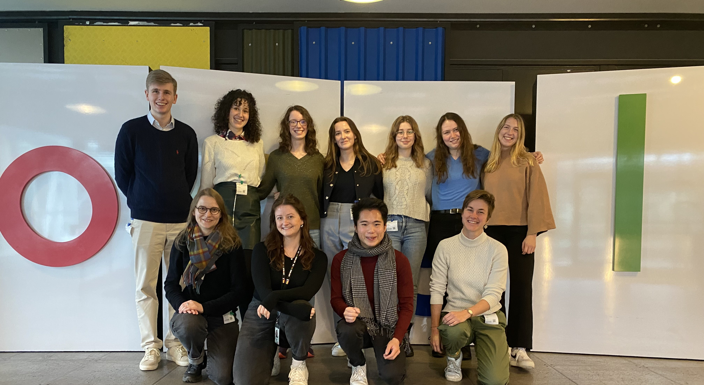
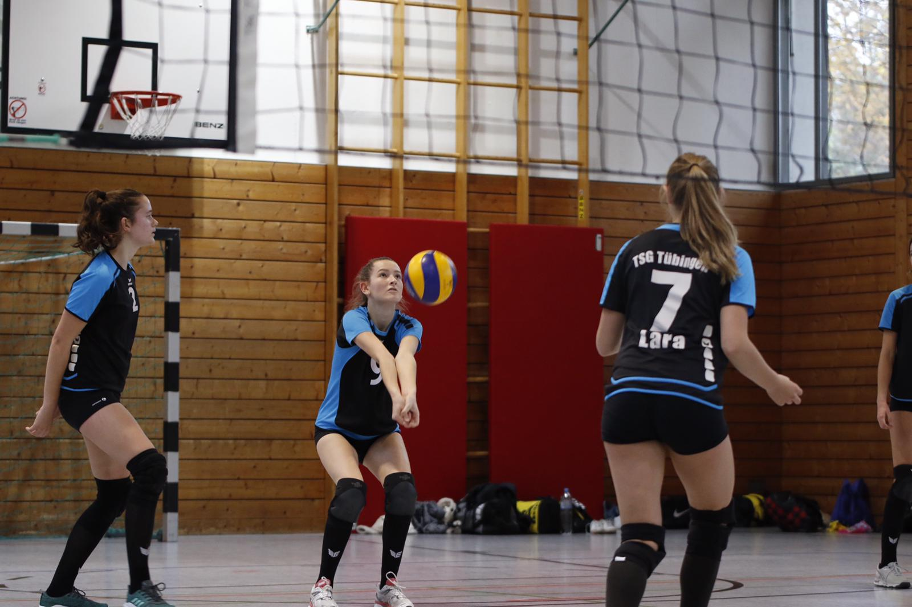

Volunteer Work
Speaker & Ambassador for the Studienstiftung des deutschen Volkes and Co.
As a dedicated volunteer, I have had the privilege of engaging in various roles across different organizations, each contributing to my personal growth and professional development. One of the most significant roles I've undertaken is as the Speaker of Ireland for the Studienstiftung des deutschen Volkes. In this capacity, my responsibilities extend to representing all scholarship holders in Ireland. Collaborating closely with the head office in Germany, I organize events and activities, fostering a sense of community among scholars. Notable events include an engaging session with the German Ambassador at Trinity College and a stimulating gathering hosted in partnership with Google. The pictures below are from the Meet-Up Event in London where I hold a speech, the Google event as well as the event with the German ambassador.
Work as Speaker
Work as Coordinator Global Business
Simultaneously, I serve as the Coordinator and Co-Head of Communications for the Global Business Society at Dublin City University. Here, my focus lies in internal coordination and communication with university officials and society members. By facilitating effective communication channels, I strive to enhance the society's impact and reach within the university community.
Work as Ambassador
In my role as an Ambassador for the Studienstiftung des deutschen Volkes in Tübingen, I engage in outreach activities such as planning school visits and organizing informative evenings at local universities. These initiatives aim to promote educational opportunities and foster dialogue within the academic community. The picture below show me at a event at University Tübingen which I had organised.
Work as Delegate
My involvement as a Delegate at the National Model of the United Nations in New York provided me with a platform to address pressing global issues. Through comprehensive research and diplomatic negotiations, I contributed to discussions on sustainable aquaculture and transforming food systems. Collaborating with fellow delegates, I emphasized the importance of international cooperation in addressing these complex challenges.
Work as Head of Logistics
Furthermore, my role as the Head of Logistics for the Economic Forum of the ESB Business School in Reutlingen allowed me to exercise organizational skills in facilitating successful events and conferences. The following links refers to the uploaded event on YouTube.
Volleyball Mentor
Additionally, serving as a Head Pupil Mentor and contributing to the Volleyball club of Wildermuth-, Kepler-, and Uhland-Gymnasium in Tübingen enabled me to give back to my local community while fostering leadership and teamwork skills among young individuals.
Overall, my voluntary engagements have not only allowed me to contribute meaningfully to various causes but have also shaped me into a more well-rounded individual, equipped with the skills and experiences necessary to navigate diverse environments and make a positive impact in society.
Hobbies
Yoga, Hiking, Piano and Volleyball
Engaging in hobbies is not just a pastime for me; it's a way to nourish my mind, body, and soul. Among my diverse interests, yoga holds a special place. It's not merely a physical exercise but a holistic practice that fosters balance and inner peace. I dedicate time each week to attend yoga classes, where I immerse myself in mindfulness, stretching, and meditation. Through yoga, I cultivate a deeper connection with myself and the world around me, finding solace in moments of tranquility amidst life's hustle and bustle.
Sudoku is another passion of mine, one that stimulates my analytical and problem-solving skills. Whether it's solving puzzles in a newspaper or through digital platforms, I find joy in the challenge of cracking each intricate grid. Sudoku serves as a mental workout, keeping my mind sharp and agile while providing a welcome break from daily routines.
When it comes to connecting with nature, hiking is my go-to activity. Exploring scenic trails, breathing in the fresh air, and witnessing the beauty of landscapes invigorate my spirit like nothing else. I make it a point to embark on hiking adventures regularly, seeking out new trails and embracing the serenity of the great outdoors.
On the court, playing volleyball brings me immense joy and camaraderie. Whether it's a friendly match with friends or a competitive game in a league, the thrill of spiking, diving, and teamwork fuels my passion for the sport. Volleyball not only keeps me physically active but also fosters bonds with fellow players, creating lasting memories and friendships.
Finally, the piano serves as my creative outlet and emotional expression. I've been playing the piano since childhood, and it remains an integral part of my life. Whether I'm practicing classical pieces or improvising melodies, playing the piano allows me to channel my emotions and unleash my creativity. It's a form of self-expression that brings me immense joy and fulfillment.
Overall, my hobbies enrich my life in multifaceted ways, nurturing my body, mind, and soul while providing avenues for self-discovery, growth, and joy. Whether it's through the tranquility of yoga, the mental stimulation of sudoku, the exhilaration of hiking, the camaraderie of volleyball, or the creative expression of playing the piano, each pursuit adds depth and vibrancy to my journey.